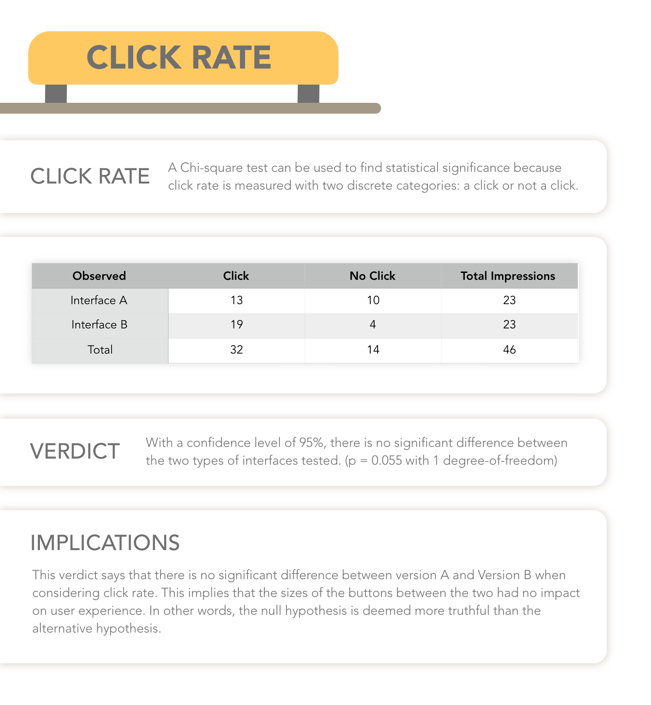
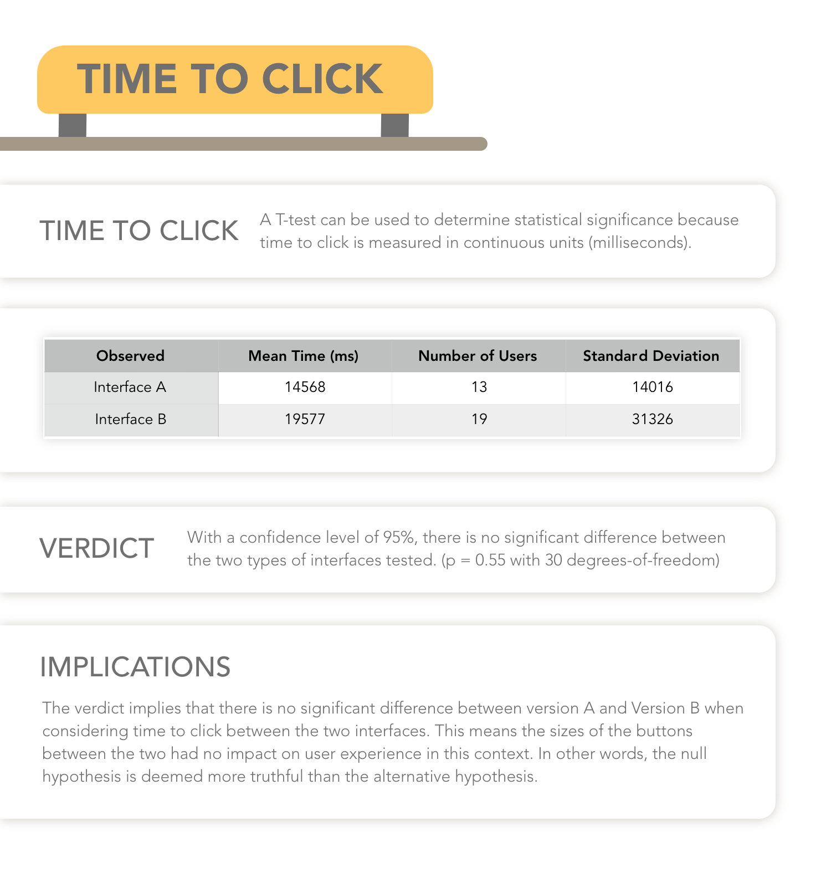
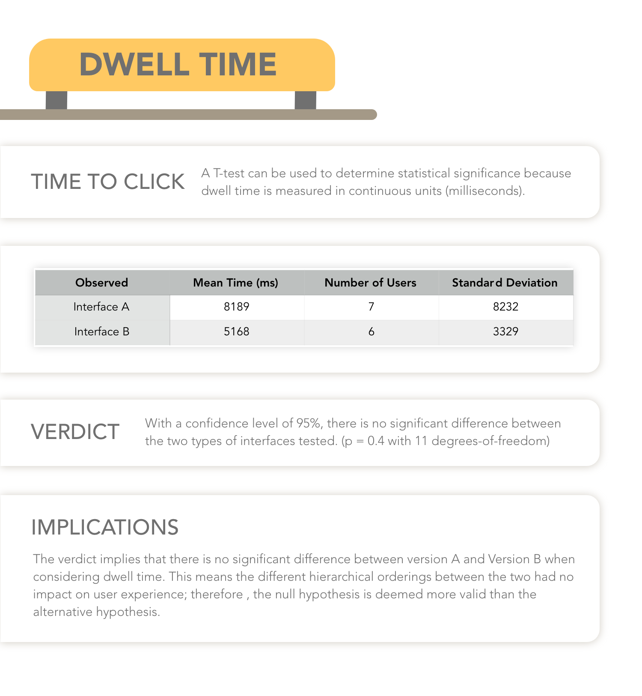

Data Evaluation
Click Rate
Click rate measures the proportion of sessions that had at least one click. This was calculated by dividing the number of unique first clicks of any given user by the number of unique user sessions.

Time to Click
Time to click measures the amount of time it took users to click on the website at least one time. This was calculated by subtracting the page load time from the click time.

Return Rate
Return rate measures the proportion of sessions that left the landing page and returned at some point. This was calculated by dividing the number of returns by the number of unique clicks. Only the first time a user returned was used. A session return was deciphered by seeing which session IDs clicked away and if there was a second page load time for the same session ID.

Dwell Time
Dwell times measures the average amount of time users spend on linked pages before returning to the landing page. This metric was calculated by subtracting the click time for a session ID from the second page loading time for any returning session ID.
